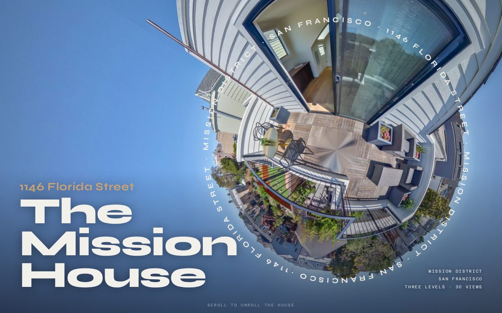

1146 Florida Street · San Francisco
The Mission House
The house starts as a planet and unrolls into a walk.
Scroll and the rooftop planet flattens into the terrace view, then walks down through all three levels on the tour's real doors. A live floor plan shows where you stand and which way you face.
Open the page